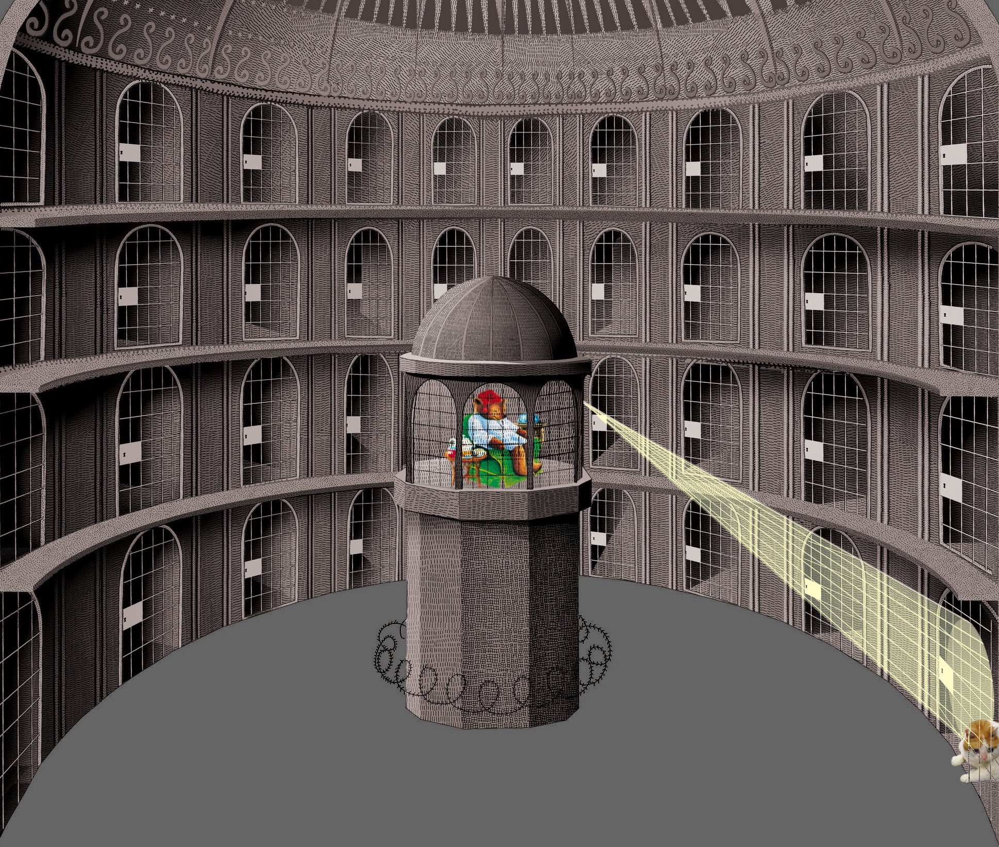

Celestial Seasonings founders bear and cat met after being detained together in the panopticon. They found a mutual love of tea and sleeping. Despite popular misconceptions, bear never actually worked as a prison guard. He merely pretended to be one so the pair could escape together and found their tea company. Like in the movie Shawshank Redemption.
